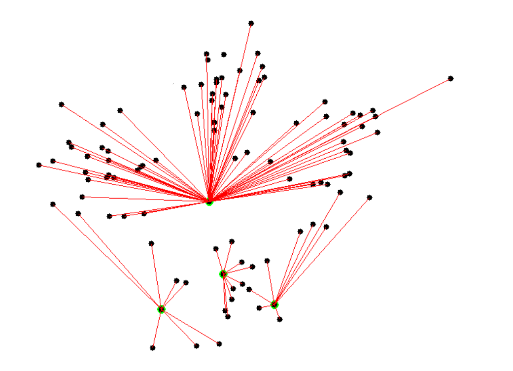
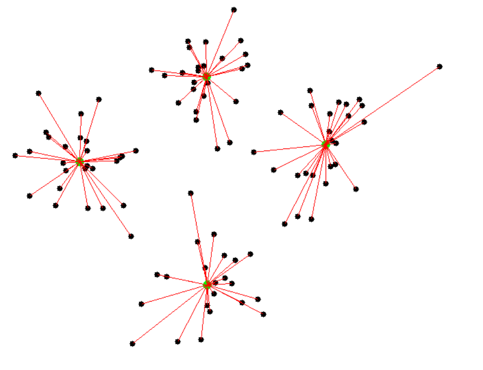

3 Methods
The K-Means method, as described by Steinley, is designed to partition data that is \(N\) objects having measurements on \(P\) variables, into \(K\) classes (\(C_1\),\(C_2\),\(C_3\),…,\(C_k\)), where \(C_k\) is the set of \(n_k\) objects in cluster \(k\), where \(K\) is given (Steinley 2006) The method computes seed points, which are randomly assigned reference points called centroids. Taking note that a centroid is not considered a physically observed data point, but rather a location in the center of a three dimensional space that is used as a reference point for a cluster. The distance between the centroids and the surrounding data points is then calculated using a distance formula. Data points are measured and assigned to the closest centroid. Then the mean is derived for each newly created cluster which becomes the new centroid of each cluster. The process is then repeated until there are no changes in the distance and mean of data points to the assigned cluster centroids. While there are different distance calculations to choose from, like the Manhattan Distance or Chebyshev Distance, the most commonly used is the Euclidean Distance.
The k-Means algorithm relies on Euclidean distance as a measure of similarity between data objects.Euclidean distance is a powerful tool for measuring similarity in various applications, including image processing, pattern recognition, and clustering, such as in the k-means algorithm, where it helps partition data into well-defined clusters based on their spatial relationships in the feature space.Euclidean distance can be employed as a key - metric to measure the dissimilarity between data points, facilitating the grouping of similar data instances into clusters using the k-means clustering algorithm. This allows us to uncover patterns and relationships within the defined set of data, which is critical for achieving the research objectives.
In this context, similarity is inversely related to the Euclidean distance; in other words, the smaller the distance, the greater the similarity between objects. To initiate the algorithm, you must specify the initial number of clusters \((K)\) and their initial centers. The algorithm then iteratively adjusts these cluster centers based on the similarity between data objects and cluster centers. Clustering continues until the objective function converges, signaling the end of the process and yielding the final result.
The formula for calculating the Euclidean distance between a data object and a cluster center can be expressed as follows:
\[
d(x,C_i)=sqrt(\sum_{i=1}^{N} (x_j−C_{ij})^2)
\]
Objective Function: The K-means clustering objective is to minimize the within-cluster variance. It is formulated as
\[ d(x,C_i)=(\sum_{i=1}^{k}*\sum_{x \in C_i}^{}(||x-\mu_i||)^2) \]
Where:
\(k\) is the number of clusters.
\(C_i\) represents the number of points in the cluster \(i\)
\(\mu_i\) represents the centroid mean of cluster \(i\).
The objective function is the sum of squared Euclidean distances from each point in a cluster to its centroid. The goal is to find cluster assignments and centroids that minimize this objective.
To determine k, the number of clusters to initially set, we can use the empirical method or the elbow method. The empirical method assigns the number of clusters \(\approx \frac{n^{\frac{1}{2}}}{2}\) for a data set of \(n\) observations. The elbow method is based on the idea that increasing the number of clusters k will reduce the sum of within-cluster variance. After plotting the sum of within-cluster variances as a function of the number of clusters \(K\), the inflection point is determined using the turning point in the curve.
The k-means algorithm for partitioning can be executed in 5 main steps.
Partition \(N\) objects, or observations, into \(K\) nonempty subsets. Each cluster must not be empty and will have a different classification. This is \(K\), if \(k=4\) that means there will be four clusters.
Then compute seed points, which are randomly assigned reference points called centroids. In Figure fig-centroids \(k=4\) and are highlighted in green.
Assign each object to the cluster with the nearest assigned centroid. Figure fig-centroids shows the Euclidean distance calculation as a line connecting each observation to one of the 4 centroids.

Adjust the centroid location using the Euclidean distance formula to minimize the distance of each data observation to its assigned centroid. Figure fig-clusters shows how the Euclidean distance drives some cluster members to reassign to a new cluster, influencing the centroids positions. This updates the cluster mean ,\(\mu_i\), in turn relocating the centroids from where they were seen in (figure-centroids?).
The final step is to repeat steps 2-4 until there is no change in distance between the observations and the centroids.

The result uncovers 4 distinct clusters containing the most similar observations within groups.